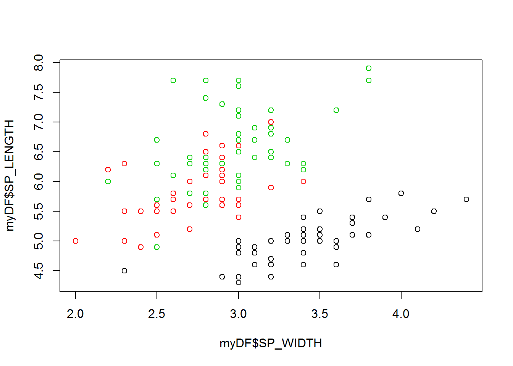
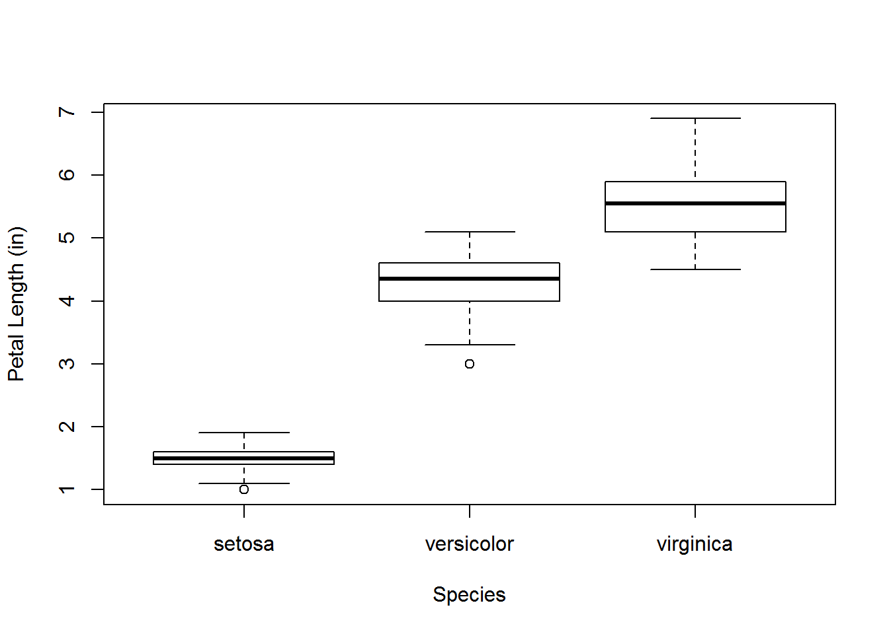
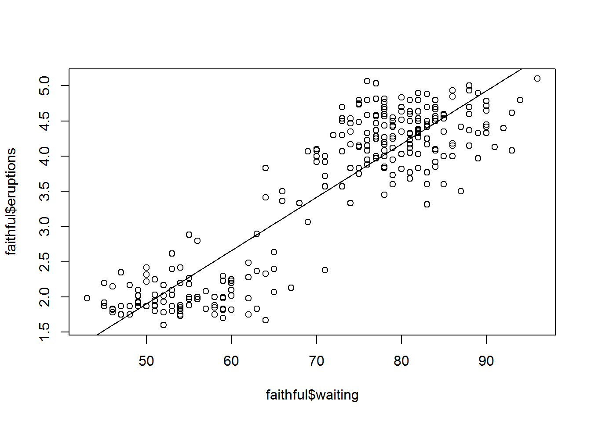

We will begin with basic R commands for understanding your programming environment and then move on to some examples of data types and basic manipulation.
packagesTry the following commands in your scripting window. Use Ctrl + Enter to run a line of code in the script window.
#Check working directory
getwd()
#Check out session info
sessionInfo()Now let’s look at R’s ability to vreate objects in memory and our ability to use and manipulate them.
A vector is a string of numbers or text, or both. Mixed vectors of numbers and text will be stored as text.
Make a vector and assign it to an object using the <- operator and the “concatenate” c() operator. Then check the class of your vector using the class() operator, and its attributes using the str() operator.
#Make a vector into memory
myVecN<-c(1,2,3,4,5,6,7,8)
myVecN## [1] 1 2 3 4 5 6 7 8#Check its class
class(myVecN)## [1] "numeric"#Check its other attributes
str(myVecN)## num [1:8] 1 2 3 4 5 6 7 8myVecL<-c('one','two','three','four','five','six')
class(myVecL)## [1] "character"str(myVecL)## chr [1:6] "one" "two" "three" "four" "five" "six"#Remove the objects with rm()
rm(myVecN,myVecL)R is a vectorized programming language meaning it can perform calculations on every object in a vector at once:
Multiply two vectors together.
v1<-c(2,4,6,8,10)
v2<-c(1,1,2,2,0.5)
v1*v2## [1] 2 4 12 16 5v1/v2## [1] 2 4 3 4 20Create a list and explore its features.
Create a data frame and explore its features
Understand what a factor is, and when to use it or not use it.
R and R packages have built-in data sets for practicing and developing your R code. We will explore the iris dataset and see some examples of data manipulation.
You can view available data sets with the data() function. Try that now.
help()head(), tail(), names(), dim())[,])subset())$,colnames)$)#Load the iris data set to an object called myDF
myDF<-iris
#Check out the documentation for the iris data set
help(iris)
#Check out the df
dim(myDF)## [1] 150 5#Check out the structure and attributes
str(myDF)## 'data.frame': 150 obs. of 5 variables:
## $ Sepal.Length: num 5.1 4.9 4.7 4.6 5 5.4 4.6 5 4.4 4.9 ...
## $ Sepal.Width : num 3.5 3 3.2 3.1 3.6 3.9 3.4 3.4 2.9 3.1 ...
## $ Petal.Length: num 1.4 1.4 1.3 1.5 1.4 1.7 1.4 1.5 1.4 1.5 ...
## $ Petal.Width : num 0.2 0.2 0.2 0.2 0.2 0.4 0.3 0.2 0.2 0.1 ...
## $ Species : Factor w/ 3 levels "setosa","versicolor",..: 1 1 1 1 1 1 1 1 1 1 ...#Check out the first 10 records
head(myDF,10)## Sepal.Length Sepal.Width Petal.Length Petal.Width Species
## 1 5.1 3.5 1.4 0.2 setosa
## 2 4.9 3.0 1.4 0.2 setosa
## 3 4.7 3.2 1.3 0.2 setosa
## 4 4.6 3.1 1.5 0.2 setosa
## 5 5.0 3.6 1.4 0.2 setosa
## 6 5.4 3.9 1.7 0.4 setosa
## 7 4.6 3.4 1.4 0.3 setosa
## 8 5.0 3.4 1.5 0.2 setosa
## 9 4.4 2.9 1.4 0.2 setosa
## 10 4.9 3.1 1.5 0.1 setosa#Check out the last 5 records
tail(myDF,5)## Sepal.Length Sepal.Width Petal.Length Petal.Width Species
## 146 6.7 3.0 5.2 2.3 virginica
## 147 6.3 2.5 5.0 1.9 virginica
## 148 6.5 3.0 5.2 2.0 virginica
## 149 6.2 3.4 5.4 2.3 virginica
## 150 5.9 3.0 5.1 1.8 virginica#Check out the column names
names(myDF)## [1] "Sepal.Length" "Sepal.Width" "Petal.Length" "Petal.Width"
## [5] "Species"#Rename a column
colnames(myDF)[5]<-'SPECIES'
#Rename all columns
names(myDF)## [1] "Sepal.Length" "Sepal.Width" "Petal.Length" "Petal.Width"
## [5] "SPECIES"names(myDF)<-c('SP_LENGTH','SP_WIDTH','PTL_LENGTH','PTL_WIDTH','SPECIES')
names(myDF)## [1] "SP_LENGTH" "SP_WIDTH" "PTL_LENGTH" "PTL_WIDTH" "SPECIES"iris data frame.summary(myDF)## SP_LENGTH SP_WIDTH PTL_LENGTH PTL_WIDTH
## Min. :4.300 Min. :2.000 Min. :1.000 Min. :0.100
## 1st Qu.:5.100 1st Qu.:2.800 1st Qu.:1.600 1st Qu.:0.300
## Median :5.800 Median :3.000 Median :4.350 Median :1.300
## Mean :5.843 Mean :3.057 Mean :3.758 Mean :1.199
## 3rd Qu.:6.400 3rd Qu.:3.300 3rd Qu.:5.100 3rd Qu.:1.800
## Max. :7.900 Max. :4.400 Max. :6.900 Max. :2.500
## SPECIES
## setosa :50
## versicolor:50
## virginica :50
##
##
## plot() function.boxplot() function.Scatterplot
plot(myDF$SP_LENGTH~myDF$SP_WIDTH, col = myDF$SPECIES)
Boxplot of Petal Length
boxplot(myDF$PTL_LENGTH~myDF$SPECIES, xlab='Species',ylab='Petal Length (in)')
Perform the following exercises with the Old Faitful data set in your Lesson 1 script so you have the code for reference. Use help(faithful) in the console to bring up info about the data set. You can reveal the code and results with the buttons below.
faithful data set and assign it to an object called faithful. Use head() to check the object.faithful<-faithful
head(faithful)## eruptions waiting
## 1 3.600 79
## 2 1.800 54
## 3 3.333 74
## 4 2.283 62
## 5 4.533 85
## 6 2.883 55dim() and str().dim(faithful)## [1] 272 2str(faithful)## 'data.frame': 272 obs. of 2 variables:
## $ eruptions: num 3.6 1.8 3.33 2.28 4.53 ...
## $ waiting : num 79 54 74 62 85 55 88 85 51 85 ...summary().summary(faithful)## eruptions waiting
## Min. :1.600 Min. :43.0
## 1st Qu.:2.163 1st Qu.:58.0
## Median :4.000 Median :76.0
## Mean :3.488 Mean :70.9
## 3rd Qu.:4.454 3rd Qu.:82.0
## Max. :5.100 Max. :96.0plot() function.plot(faithful$eruptions~faithful$waiting)